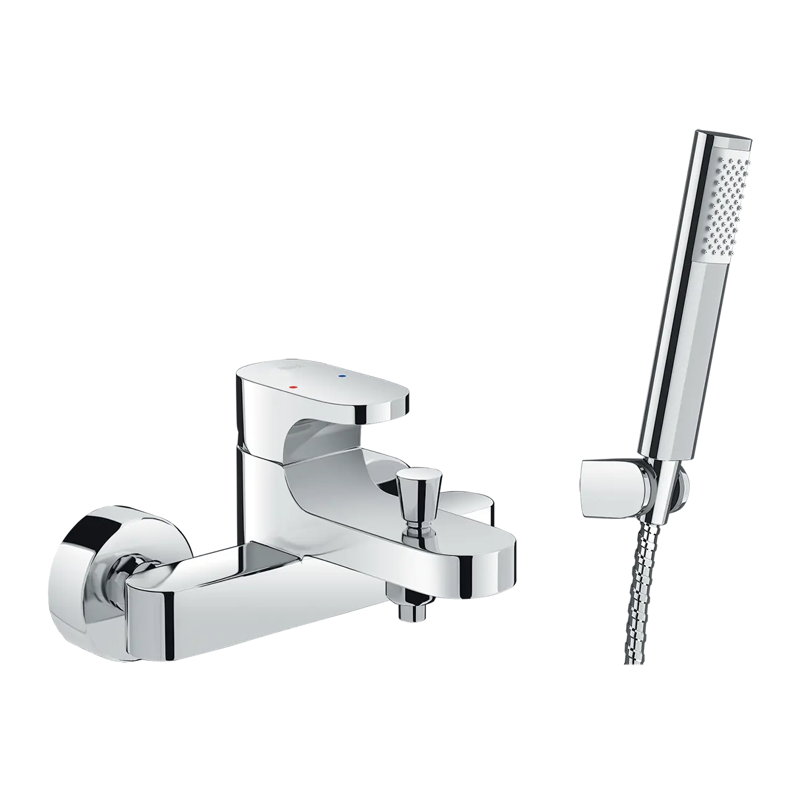
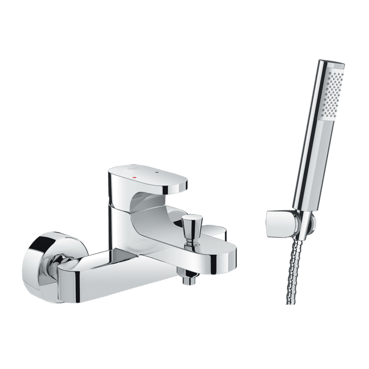

Sen vòi đơn BFV-6003S đến từ thương hiệu thiết bị vệ sinh INAX mang phong cách thiết kế mạnh mẽ và hiện đại. Với những đường nét vuông vức kết hợp cùng tay sen tắm tối giản, sản phẩm không chỉ tạo điểm nhấn cá tính mà còn mang lại cảm giác sảng khoái tuyệt đối cho không gian phòng tắm của gia đình bạn.Thiết kế sen vòi đơn BFV-6003SThiết kế BFV-6003S vuông vức, chắc chắn tạo nên sự mạnh mẽ, rất phù hợp với những người yêu thích sự đơn giản và cá tính.Sen vòi đơn BFV-6003S đi kèm tay sen mạ bền đẹp với thiết kế tinh gọn, giúp người dùng linh hoạt và thoải mái trong suốt quá trình sử dụng.Cấu tạo tay vặn vòi thông minh giúp việc điều khiển lượng nước và nhiệt độ trở nên dễ dàng và tiện lợi hơn bao giờ hết.Công nghệ bền bỉ và tiết kiệm tài nguyênSen vòi đơn BFV-6003S được trang bị đĩa Cartridge bền bỉ, không chỉ giúp vận hành êm ái, chống rò rỉ mà còn hỗ trợ tiết kiệm nước hiệu quả cho người dùng.Thân vòi được sản xuất từ chất liệu ít chì, đảm bảo an toàn tuyệt đối cho sức khỏe và thân thiện với nguồn nước sinh hoạt.Bề mặt được bao phủ bởi lớp mạ Cr-Ni đạt tiêu chuẩn khắt khe của Nhật Bản, giúp tăng tuổi thọ sản phẩm và duy trì vẻ sáng bóng lâu dài trong môi trường ẩm ướt.Kích thước nhỏ gọnSen vòi đơn BFV-6003S có kích thước nhỏ gọn 150mm x 167mm, dễ dàng lắp đặt cho nhiều không gian khác nhau. Ngoài ra, sản phẩm cũng hoạt động hiệu quả trong dải áp lực 0.05 MPa - 0.75 MPa, đảm bảo dòng chảy mạnh mẽ và sảng khoái.Video giới thiệu sen vòi, vòi chậu INAXThông số kỹ thuậtChất liệuĐồng thau mạ Crom/NikenLoạiSen vòi đơnKích thước150mm x 167mmThiết kếTay sen Massage 1C với 3 chế độ phunThương hiệuINAXTính năng- Thiết kế vuông vức mạnh mẽ, hiện đại - Đĩa Cartridge bền bỉ, giúp vận hành êm ái và tiết kiệm nước - Vòi ít chì, đảm bảo an toàn tuyệt đối cho sức khỏeÁp lực nước0.05 MPa - 0.75 MPaKhác- Hotline tư vấn và bảo hành: 18006633
Sen vòi đơn BFV-6003S
Vòi chậu thương hiệu INAX.
Đã cập nhật danh sách yêu thích.
DANH MỤC: Vòi chậu
MÃ SẢN PHẨM: BFV-6003S
DEPTH: 0mm
HEIGHT: 167mm
WIDTH: 150mm
Sen vòi đơn BFV-6003S đến từ thương hiệu thiết bị vệ sinh INAX mang phong cách thiết kế mạnh mẽ và hiện đại. Với những đường nét vuông vức kết hợp cùng tay sen tắm tối giản, sản phẩm không chỉ tạo điểm nhấn cá tính mà còn mang lại cảm giác sảng khoái tuyệt đối cho không gian phòng tắm của gia đình bạn.Thiết kế sen vòi đơn BFV-6003SThiết kế BFV-6003S vuông vức, chắc chắn tạo nên sự mạnh mẽ, rất phù hợp với những người yêu thích sự đơn giản và cá tính.Sen vòi đơn BFV-6003S đi kèm tay sen mạ bền đẹp với thiết kế tinh gọn, giúp người dùng linh hoạt và thoải mái trong suốt quá trình sử dụng.Cấu tạo tay vặn vòi thông minh giúp việc điều khiển lượng nước và nhiệt độ trở nên dễ dàng và tiện lợi hơn bao giờ hết.Công nghệ bền bỉ và tiết kiệm tài nguyênSen vòi đơn BFV-6003S được trang bị đĩa Cartridge bền bỉ, không chỉ giúp vận hành êm ái, chống rò rỉ mà còn hỗ trợ tiết kiệm nước hiệu quả cho người dùng.Thân vòi được sản xuất từ chất liệu ít chì, đảm bảo an toàn tuyệt đối cho sức khỏe và thân thiện với nguồn nước sinh hoạt.Bề mặt được bao phủ bởi lớp mạ Cr-Ni đạt tiêu chuẩn khắt khe của Nhật Bản, giúp tăng tuổi thọ sản phẩm và duy trì vẻ sáng bóng lâu dài trong môi trường ẩm ướt.Kích thước nhỏ gọnSen vòi đơn BFV-6003S có kích thước nhỏ gọn 150mm x 167mm, dễ dàng lắp đặt cho nhiều không gian khác nhau. Ngoài ra, sản phẩm cũng hoạt động hiệu quả trong dải áp lực 0.05 MPa - 0.75 MPa, đảm bảo dòng chảy mạnh mẽ và sảng khoái.Video giới thiệu sen vòi, vòi chậu INAXThông số kỹ thuậtChất liệuĐồng thau mạ Crom/NikenLoạiSen vòi đơnKích thước150mm x 167mmThiết kếTay sen Massage 1C với 3 chế độ phunThương hiệuINAXTính năng- Thiết kế vuông vức mạnh mẽ, hiện đại - Đĩa Cartridge bền bỉ, giúp vận hành êm ái và tiết kiệm nước - Vòi ít chì, đảm bảo an toàn tuyệt đối cho sức khỏeÁp lực nước0.05 MPa - 0.75 MPaKhác- Hotline tư vấn và bảo hành: 18006633
DANH MỤC: Vòi chậu
MÃ SẢN PHẨM: BFV-6003S
DEPTH: 0mm
HEIGHT: 167mm
WIDTH: 150mm